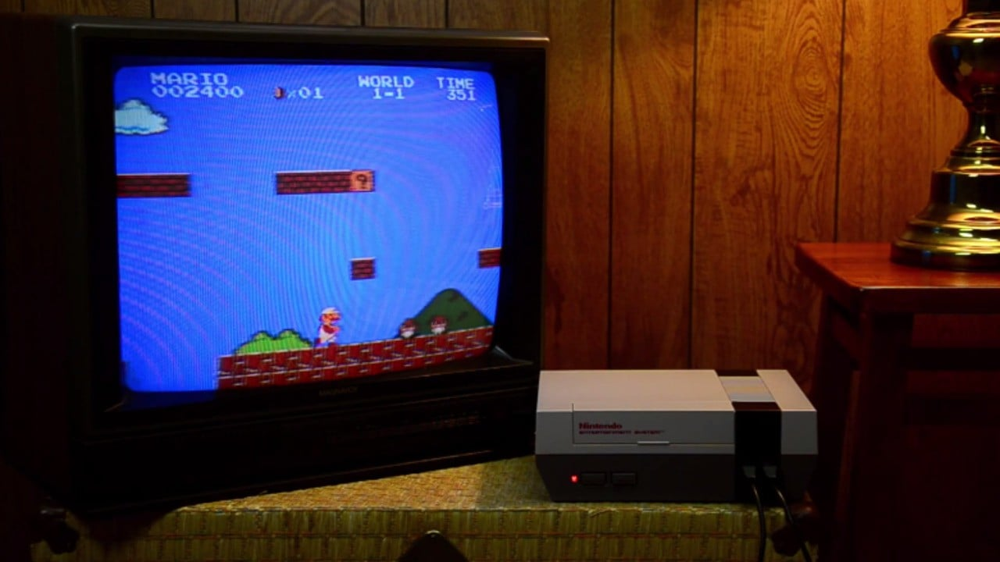
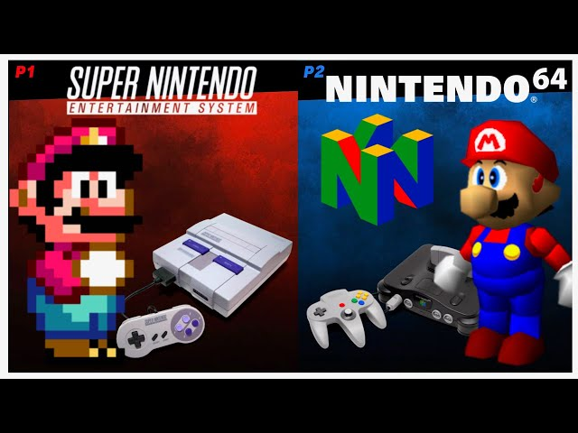
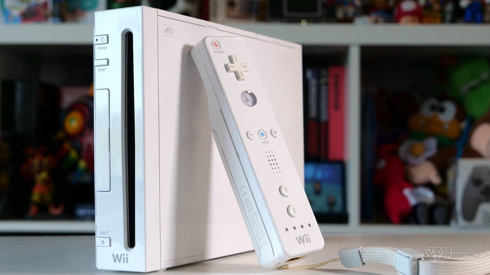
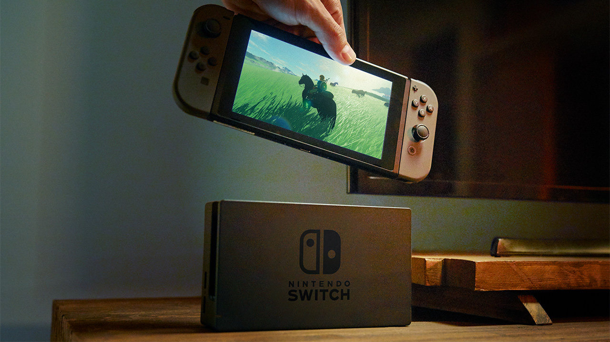
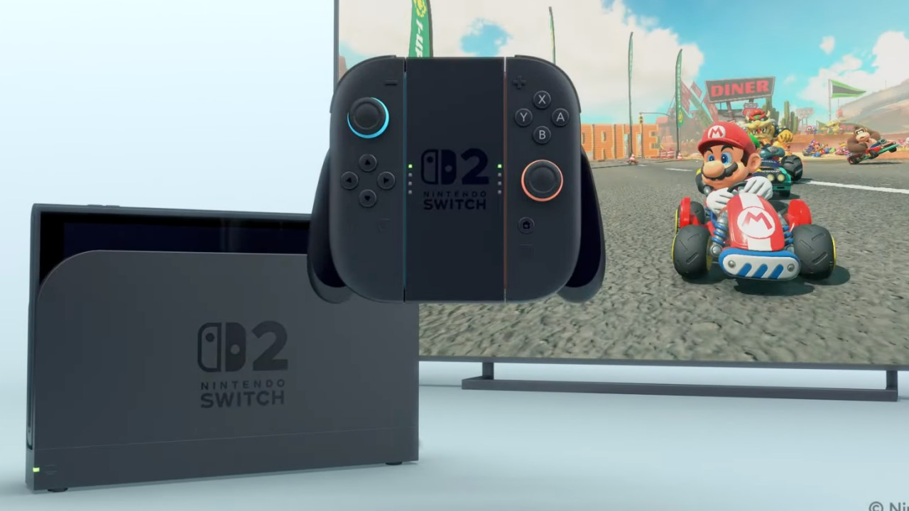

Nintendo’s story stretches back far beyond video games. Founded in 1889 as a playing card company, it transformed into one of the most influential entertainment giants in the world. With a reputation for creativity, risk-taking, and beloved characters like Mario, Zelda, and Donkey Kong, Nintendo has defined generations of gaming while carving its own unique path.
The Nintendo Entertainment System (NES) revived the video game industry after the 1983 crash. With iconic titles like Super Mario Bros. and Zelda, Nintendo proved that home consoles could deliver high-quality, unforgettable experiences.
“Now you’re playing with power!” – NES Slogan
The Super Nintendo (SNES) built on the NES legacy with richer graphics and timeless classics like Super Metroid and FFVI. Later, the Nintendo 64 introduced 3D gaming with landmark titles like Mario 64 and Ocarina of Time, forever changing how players explored virtual worlds.
“The fun machine.” – SNES Tagline
The Wii was a global phenomenon, selling over 100 million units thanks to its accessible motion controls and family-friendly design. Wii Sports became one of the best-selling games of all time, attracting players of all ages. Its successor, the Wii U, struggled commercially, but it laid the foundation for Nintendo’s hybrid console approach.
“Wii would like to play.” – Wii Campaign
The Nintendo Switch became a massive success by blending handheld and home console gaming into one system. With instant portability and a strong library of titles like BotW and ACNH, the Switch showcased Nintendo’s strength in innovation and its ability to connect with players worldwide.
“Switch and play.” – Nintendo Switch Tagline
In 2025, Nintendo released the Switch 2, building on the hybrid design that made its predecessor a global hit. With upgraded performance, improved battery life, and enhanced Joy-Con controllers, the system continues Nintendo’s tradition of balancing innovation with accessibility. Launch titles like MP4 and MK9 cemented its appeal, ensuring the company’s momentum into a new generation.
“Play the Future.” – Nintendo Switch 2 Tagline